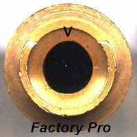

Emulsion Tubes, Mikuni: Worn needle jet orifice  | This is a picture of the needle jet area of an emulsion tube from a stock 38mm CV Mikuni carb as installed on Ducati, Yamaha TDM/TRX 850, YZF750, FZR/YZF1000, etc..
It has approximately ~5000 miles or 8000k usage.
Notice that the center hole is noticeably worn at the "V", the 12 o'clock position, which would be towards the engine, as installed in the carburetor.
This causes 2 conditions. First, it allows more fuel to enter the carburetor, as in using a needle with a small base diameter AND the fuel that enters the carb - it enters in larger droplets, resulting in poor combustion.
We carefully check needle jet condition on the vehicles when we create and install carb recalibration kits.
If you install a kit and it is much too rich at low rpm, and lowering the fuel level 1mm doesn't fix it, check the needle jets for any wear - it's not uncommon.
Additional: Eventually, the carb body, where it holds the slide from rattling back and forth will wear out - allowing the slide to rattle and bang the needle into the needle jet orifice - causing accelerated wear.
Example: The original needle jet lasted 5,000 miles. After replacing the worn emulsion tube / needle jet, they only lasted 3,000 miles or less. That's because the slide guide slot in the carb body is worn - not because of the emulsion tube or needle is bad.
|
|